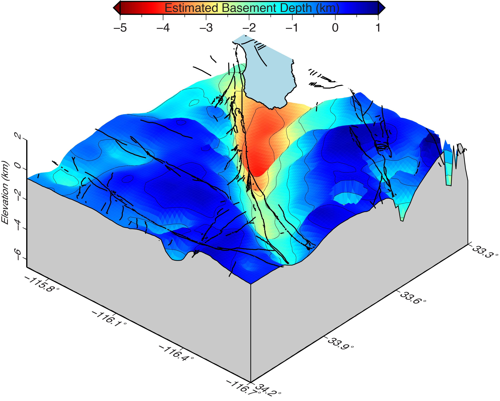
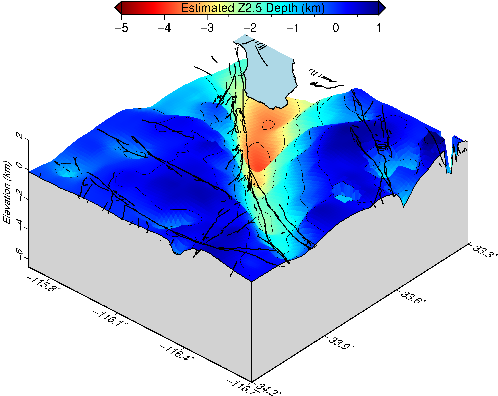

DATA USAGE POLICY
The data provided on our website are offered as a public service. There is no expressed or implied guarantee regarding the accuracy of the information or its use for any particular purpose.
3-D basement, Z2.5 and P-wave velocity model of Coachella and Imperial valleys, Southern California

Figure 1: Perspective view of the basement surface in the Coachella Valley estimated using the 4.50 km/s isovelocity surface from our 3-D velocity model, and looking at the surface from N42˚W. The basin amplification effect derived from including a basement surface in 3-D earthquake ground shaking simulations is known to improve seismic hazard assessments. Black lines are surface traces of mapped faults in the area.

Figure 2: Perspective view of the Z2.5 surface in the Coachella Valley estimated from our 3-D velocity model. This surface closely resembles our basement surface in the area determined using the 4.50 km/s isovelocity surface. Z2.5 helps model basin amplification effects in earthquake ground shaking simulations and is used by structural engineers in earthquake-resistant constructions. Black lines are surface traces of mapped faults in the area.Coachella Valley 3-D P-wave velocity model The Coachella Valley in the northern Salton Trough hosts the southern portion of the San Andreas fault system, which is overdue for a large magnitude earthquake. To help improve our knowledge of the subsurface in this region, we have analyzed local earthquakes and active source data from the 2011 Salton Seismic Imaging Project to develop an improved 3-D velocity model for the Coachella Valley, down to 9 km depth (Ajala et al., 2019).
Our model reveals the detailed 3-D basin geometry and strong crustal heterogeneities that can be used to improve earthquake ground shaking estimates of seismic hazard. Sedimentary basins focus and amplify seismic waves, thereby generating larger amplitude motions that persist for longer times. Therefore, our estimated basement surface or Z2.5 surface has practical applications for structural engineers interested in incorporating basin amplification terms in earthquake-resistant constructions. Crustal heterogeneities in the model can also help improve our understanding of fault rupture processes and can provide better accuracy in ground motion predictions.
The Z1.0 surface can be estimated from the Z2.5 surface. We refer to Kaklamanos et al. (2011) for further details on obtaining the Z1.0 surface.
To download the Coachella Valley 3-D P-wave velocity model (columns: lon lat depth velocity), click here.
To download the estimated basement surface (isovelocity = 4.5 km/s), click here.
To download the estimated Z2.5 surface , click here.
The columns of the estimated basement and Z2.5 surfaces are (lon lat depth).
The areal extent of the model and surfaces are shown in Ajala et al. (2019), i.e., lon: -116.7 to -115.7, lat: 33.3 to 34.2, and depth is from 0 to 9 km for the 3-D model
Imperial Valley 3-D P-wave velocity model
To download the Imperial Valley model, click here.
To download an explanation of the model file, click here.
To download the estimated Z2.5 surface , click here.
Kaklamanos, J., L. Baise, D. Boore (2011) Estimating Unknown Input Parameters when Implementing the NGA Ground-Motion Prediction Equations in Engineering Practice. Earthquake Spectra: November 2011, Vol. 27, No. 4, pp. 1219-1235. https://doi.org/10.1193/1.3650372
ACKNOWLEDGMENTS
The Salton Seismic Imaging Project (SSIP) was funded by the U.S. Geological Survey Multihazards Demonstration Project, and the National Science Foundation Earthscope and Margins Programs through grants OCE-0742253 (to California Institute of Technology) and OCE-0742263 (to Virginia Tech). This research was supported by Southern California Earthquake Center awards 15190 and 18074 and the U.S. Geological Survey Grant G15AP00062. SCEC is funded by NSF Cooperative Agreement EAR-1033462 & USGS Cooperative Agreement G12AC20038. SCEC Contribution No. 8269.